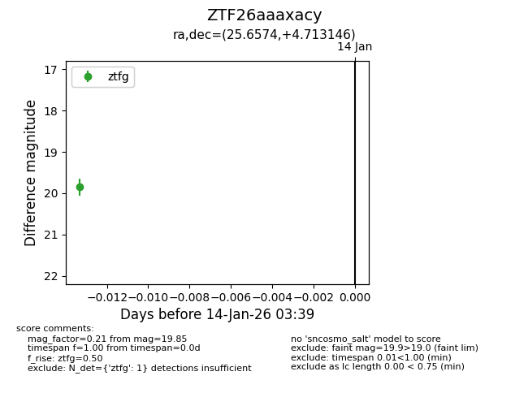
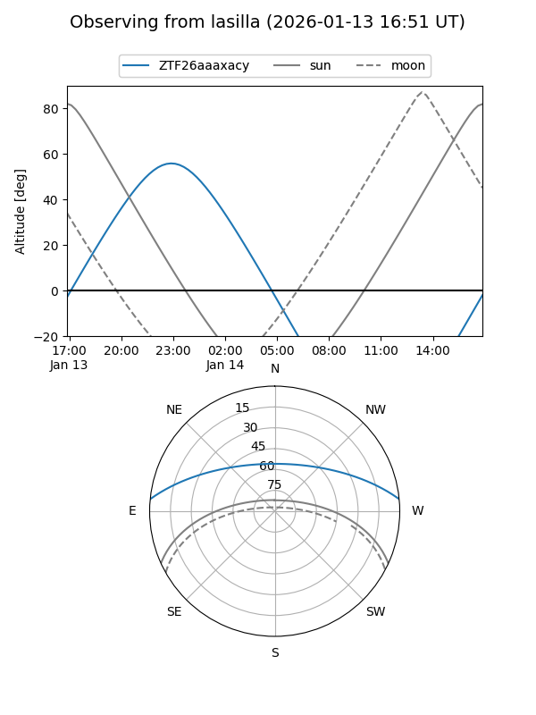
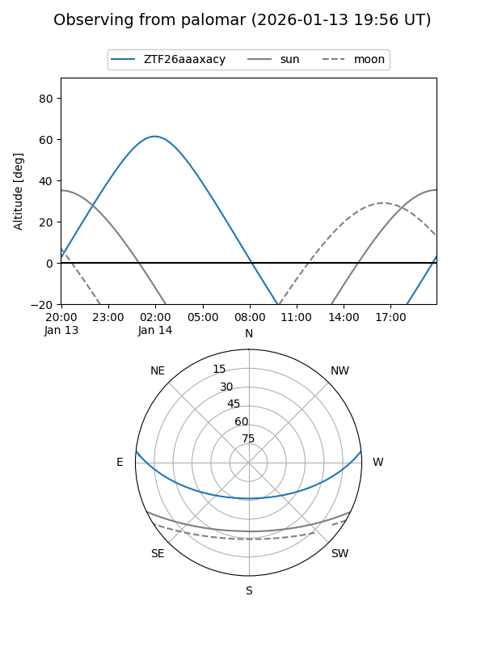

ZTF26aaaxacy
Target ZTF26aaaxacy at 2026-01-16 03:45
Aliases and brokers:
FINK: link
Lasair: link
ALeRCE: link
alt names
ZTF26aaaxacy (ztf,fink_ztf)
Coordinates:
equatorial (ra, dec) = 25.6574,+4.71315
equatorial (HMS+DMS) = 01:42:37.79,+04:42:47.33
galactic (l, b) = (146.0838,-55.84040)
Flags:
Photometry:
last ztfg=19.85
1 ztfg detections
Lightcurve

Visibility


Additional plots